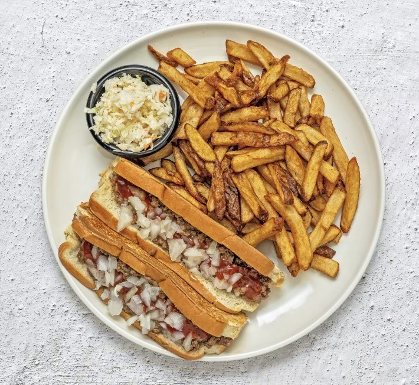
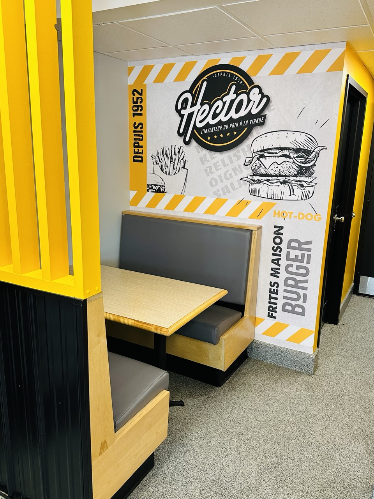

Depuis 1952
L'inventeur du pain à la viande
Poutines, burgers, pizzas, assiettes généreuses et frites maison croustillantes.
Heures d'ouverture
- Lundi – Mercredi : 11 h à 20 h
- Jeudi – Vendredi : 11 h à 21 h
- Samedi & Dimanche : 11 h à 20 h
Restaurant Hector
Nouvelle administration, nouveau look, même recette.
Chez Hector, on vient pour un classique bien de chez nous : un pain à la viande généreux, des poutines bien garnies et des frites maison dorées à souhait.
Sur place, pour emporter ou en famille, on sert des assiettes de comfort food québécoise dans une ambiance chaleureuse et sans prétention.


Une histoire de famille
Le Gros Hector, depuis 1952.
Fondé par Hector Fontaine, affectueusement surnommé « le Gros Hector », le restaurant est rapidement devenu une référence de la restauration rapide au Québec.
Aujourd'hui, la tradition se poursuit : portions généreuses, service sympathique et recettes qui traversent les générations — avec notre fameux pain à la viande comme vedette.
Venez nous voir !
Un accueil chaleureux, un service courtois et des assiettes bien remplies.
- Adresse : 2790, av. Maufils, Québec, QC G1J 4L3
- Téléphone : (418) 663-7640
- Repas : sur place • pour emporter
Heures d'ouverture
- Lundi – Mercredi : 11 h à 20 h
- Jeudi – Vendredi : 11 h à 21 h
- Samedi & Dimanche : 11 h à 20 h